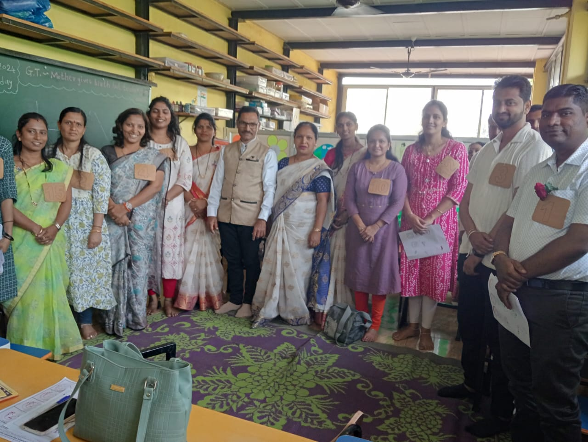
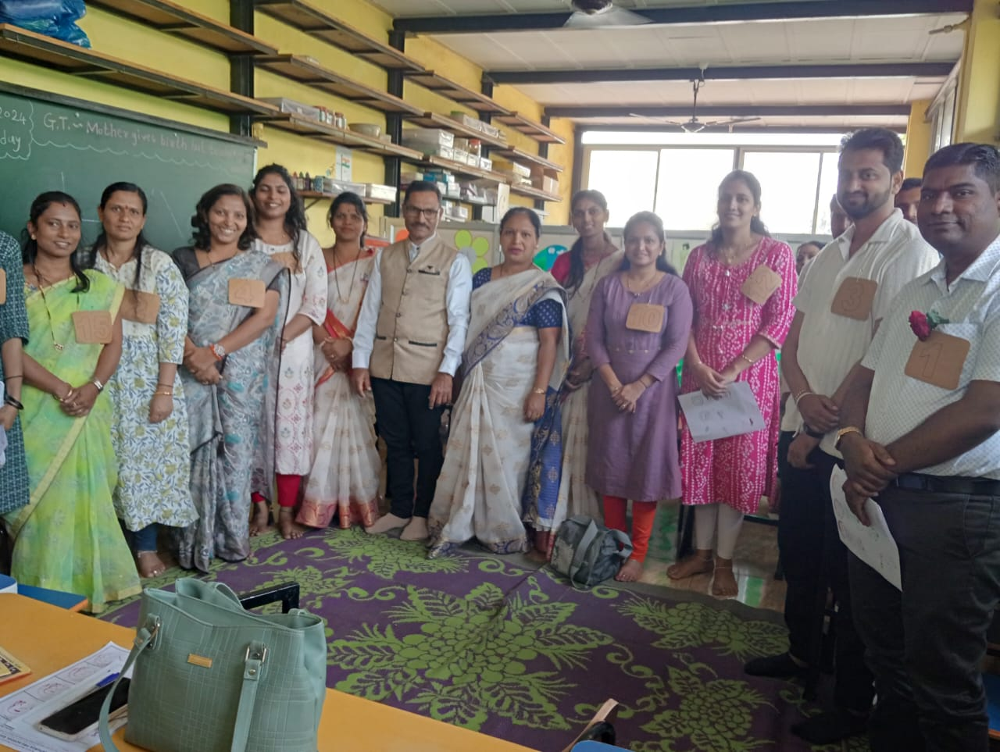

About Us
We believe in an activity-based learning approach:
I hear, I forget;
I see, I remember;
But, if I do, I understand.
At Zapurza Pre School, we foster an environment where children not only learn but also understand through engaging activities. We believe that knowledge gained through active participation lays a strong foundation for lifelong learning.
Our Classes
Play Group
Age: 2 to 3 years
Description: Our Play Group program focuses on developing social, emotional, and motor skills through play-based learning activities.
Nursery
Age: 3 to 4 years
Description: Our Nursery program emphasizes language development, early literacy, and numeracy skills in a nurturing and supportive environment.
LKG (Lower Kindergarten)
Age: 4 to 5 years
Description: Our LKG program focuses on building foundational skills in language, mathematics, and social development to prepare children for formal schooling.
UKG (Upper Kindergarten)
Age: 5 to 6 years
Description: Our UKG program provides a bridge between early childhood education and formal schooling, focusing on preparing children for primary education.
Staff Information

Mrs. Maya Uday Kolvankar
Position: Principal
Mrs. Arpita Aniruddha Diwan
Position: Teacher
Mrs. Savita Sonal Baramati
Position: Teacher
Archana Prabhakar Patil
Position: Teacher

Mrs. Kavita Ajit Ghewade
Position: Teacher
Mrs. Gitanjali Sanjay Nirmale
Position: Teacher
Mrs. Rehana Narsulla Makandar
Position: Peon(Aunty/Mavshi)
Mrs. Padma Kiran Patil
Position: Peon(Aunty/Mavshi)

 
